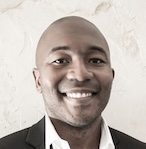

Keynote Speakers

James Zou
Stanford University

Tanveer Syeda-Mahmood
IBM Research
Daguang Xu
NVIDIA
David Sontag
MIT & Layer Health
Zachary Lipton
CMU & Abridge

Bo Li
University of Chicago & Virtue AI

Yuyin Zhou
University of California, Santa Cruz

Sanmi (Oluwasanmi) Koyejo
Stanford University

Connor T. Jerzak
University of Texas at Austin

Snehalkumar 'Neil' Gaikwad
University of North Carolina at Chapel Hill